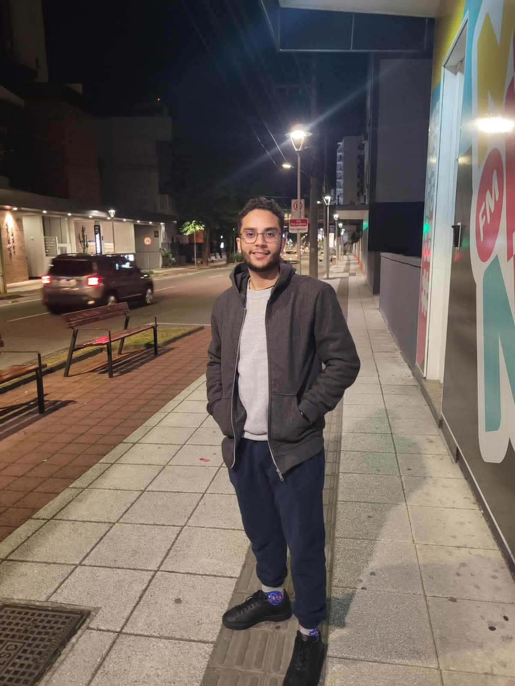

Personal Information
- Date of Birth: 07/31/1996
- Address: Luiz Moretti Street, 40. Victor Konder
- Email: edsonreis.work@gmail.com
- Phone: (99) 99999-9999
About Me
Hi, everyone. I'm Edson! 🤝
- 📚 I am a business analyst in IT. Graduated in Science and Technology and post-graduated in Information Systems Architecture. Constantly studying backend technologies, books and the internet in general;
- 💹 My goals are related to: Create and improve Human Resources, Personnel Department and Occupational Medicine and Safety systems.
- 🤓 Passionate about lord of the rings, star wars, harry potter, marvel, astrophysics, retro gaming, and international politics, this is me when I'm not coding.
- 🎮 If you want to work, play or just talk to me, you can reach me here.
Professional Experience
-
Unimed Natal
Position: Systems Analyst
Period: 2014 - 2022
-
Senior Sistemas
Position: Technical Business Executive
Period: 2022 - present
Educational Background
-
Federal University of Rio Grande do Norte
Course: Science and Technology
Period: 2015 - 2020
-
Federal University of Rio Grande do Norte
Course: Technical in Informatics
Period: 2020 - 2021
-
Serra Gaúcha College
Course: Information Systems Architecture
Period: 2021 - 2022
-
Serra Gaúcha College
Course: MBA in Personnel Department
Period: 2022 - 2023
Social Medias
- GitHub: https://github.com/edsonsreis
- Instagram: https://www.instagram.com/edson.sr/